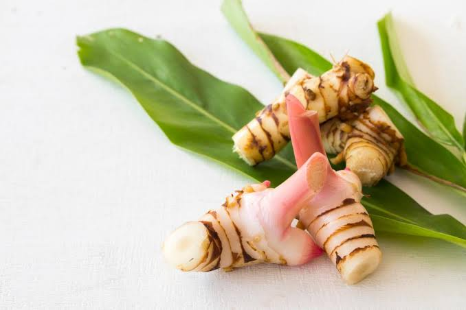

Kandungan Utama
- Minyak atsiri
- Galangin
- Flavonoid
- Saponin
- Tanin
- Polifenol
- Eugenol
- Vitamin C
- Antioksidan alami


Nama Ilmiah : Alpinia galanga (L.) Willd.
Lengkuas merupakan tanaman rimpang yang banyak dimanfaatkan sebagai bumbu masakan sekaligus tanaman obat keluarga (TOGA). Tanaman ini memiliki aroma khas dan mengandung berbagai senyawa aktif yang berkhasiat bagi kesehatan. Dalam pengobatan tradisional, lengkuas telah lama digunakan untuk membantu mengatasi gangguan pencernaan, mengurangi peradangan, serta meningkatkan daya tahan tubuh.
Lengkuas memiliki berbagai manfaat bagi kesehatan karena mengandung senyawa aktif yang bersifat antioksidan, antiinflamasi, dan antibakteri. Secara tradisional, lengkuas dipercaya dapat membantu melancarkan sistem pencernaan, mengurangi rasa mual, mengatasi perut kembung, membantu meredakan masuk angin, mengurangi nyeri sendi dan pegal otot, serta membantu meningkatkan nafsu makan. Selain itu, kandungan antioksidan pada lengkuas berperan membantu melindungi sel-sel tubuh dari kerusakan akibat radikal bebas, meningkatkan daya tahan tubuh, serta membantu menjaga kesehatan kulit dan tubuh secara umum.
Lengkuas umumnya aman dikonsumsi sebagai bumbu masakan maupun minuman herbal dalam jumlah yang wajar. Namun, konsumsi berlebihan dapat menyebabkan iritasi lambung pada sebagian orang. Bagi ibu hamil, ibu menyusui, atau seseorang yang memiliki penyakit tertentu dan sedang menjalani pengobatan, sebaiknya berkonsultasi dengan tenaga kesehatan sebelum mengonsumsi lengkuas secara rutin sebagai obat herbal.
Scan QR Code berikut untuk membuka halaman informasi tanaman Lengkuas.